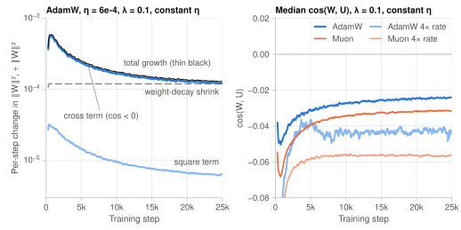
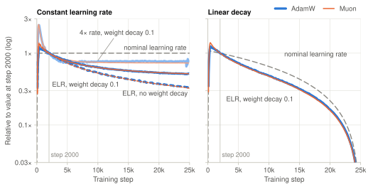
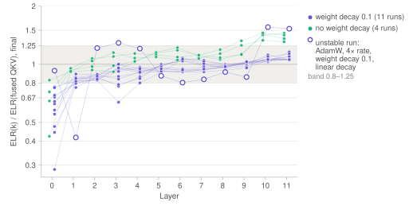

A Small Cosine Sets the Weight Norm under AdamW and Muon
We trained GPT with AdamW and Muon in 16 runs. In the constant-rate runs with weight decay, a small negative cosine between update and weight supplies 94–97% of the weight-norm growth. A random-walk model with momentum predicts the median ratio of this cosine to the effective learning rate (ELR) within 13%. In the one run pair that reached equilibrium, Muon settled 23% below AdamW, and the model predicts 24%.
Train a GPT with AdamW and with Muon at the same learning rate and the same weight decay. At the end of training, Muon takes smaller steps relative to its weights. The step relative to the weight is the effective learning rate (ELR),
Here \(W\) is a weight matrix. \(\eta\) is the learning rate that the schedule sets, which we call the nominal learning rate. \(U\) is the update: the direction that the optimizer computes from the gradients, before scaling by \(\eta\). \(\lVert\cdot\rVert\) is the Frobenius norm, the square root of the sum of the squared entries. Both optimizers in this post apply the same rule,
The step is \(-\eta U\). Weight decay, with coefficient \(\lambda\), separately shrinks \(W\) by \(\eta\lambda W\). AdamW and Muon differ only in how they compute \(U\). For a scale-invariant weight, the ELR measures how fast the function of the network changes. A weight is scale-invariant when the network output does not change if \(W\) is multiplied by a positive number. No matrix in these runs is scale-invariant. In a pre-norm transformer, scale symmetries hold for pairs of matrices such as \((W_{q}, W_{k})\), and not for single matrices (Su, 2026).
At a constant nominal learning rate of 2.4e-3 with weight decay 0.1, the runs cover 6 timescales of \(1/(\eta\lambda)\) steps and the norm budget balances. Over the last 10% of training, the median ELR is 0.0041 for Muon and 0.0053 for AdamW. So Muon is 23% lower. At equilibrium, the ELR does not depend on the update size. This comparison is one run per optimizer. At the base rate of 6e-4, Muon is also 20% lower, but the cause is different. There the runs cover only 1.5 timescales, and the ELR still follows the update size. With Moonlight scaling, the Muon update norm is 0.80× the AdamW update norm. The same 20–24% gap appears without weight decay and under linear decay.
At equilibrium, the weight norm sets the ELR. The norm settles where weight decay removes what the updates add. The median cosine between \(U\) and \(W\) is small, −0.02 to −0.06. It still supplies 94–97% of the norm growth. A random-walk model with momentum predicts the median ratio of this cosine to the ELR within 13% of the model value. The model gives Muon, with Nesterov momentum at 0.95, an equilibrium ELR 24% below AdamW at \(\beta_{1} = 0.9\). Single matrix types depart from the model by up to a factor of about 2, and one outlier by more than 5.
Part of this is known. A constant \(\eta\) gives a falling ELR. Weight decay brings the ELR to a rotational equilibrium, in which the norm stops changing (van Laarhoven, 2017; Wan et al., 2020; Li et al., 2020). Kosson et al. (2023) derived the AdamW equilibrium and measured it per layer in GPT-2 124M at a constant rate. In LLM pretraining, Zou (2026) measured a falling ELR for Muon at a constant rate. The Hunyuan team (2026) derived a steady-state angle per step near \(\sqrt{2\eta\lambda}\). It also saw that angle curves under different schedules nearly coincide. This post adds three things. It measures Muon and AdamW in one setup. It splits the per-step norm budget into a square term and a cross term. It predicts the cross term from the momentum coefficients, for any momentum form.
Setup. The network has the GPT-2-small shape: 12 layers and width 768. The MLP is SwiGLU, a gated MLP with three matrices. The normalization layers are RMSNorm, which rescales activations to a fixed size. The attention query, key and value matrices q, k and v are stored as one fused QKV matrix. There is no QK-norm, which would normalize q and k before attention. The blocks hold 113M parameters. The embedding and the output head are separate matrices and add 77M, for 191M in total. The data is FineWeb-edu, a filtered set of educational web text. Training is 25,000 steps of 32,768 tokens, 0.82B tokens in total. That is about 7 tokens per block parameter. In the first 300 steps, the warmup, \(\eta\) rises from near zero to its peak. Gradients are clipped to norm 1.0.
AdamW uses \(\beta = (0.9, 0.95)\). \(\beta_{1} = 0.9\) is the momentum coefficient: each step back, the coefficient of an older gradient is multiplied by \(\beta_{1}\). \(\beta_{2} = 0.95\) averages the squared gradients that AdamW uses to scale each coordinate. Below, \(\beta\) always means the momentum coefficient. Muon (Jordan et al., 2024) uses Nesterov momentum with momentum coefficient 0.95. Nesterov momentum adds the current gradient once more on top of the momentum. Muon then orthogonalizes the result. Five Newton–Schulz iterations, a fixed polynomial map, set the singular values of the update to a fixed range near 1. Muon orthogonalizes q, k and v separately. For an \(m \times n\) matrix, Muon scales the update by \(0.2\sqrt{\max(m,n)}\) (Moonlight scaling, Liu et al., 2025). This scaling brings its update size near that of AdamW. In these runs the Muon update norm is still 0.80–0.88× the AdamW update norm. In the Muon runs, the embeddings, the output head and the RMSNorm scale parameters use AdamW.
The base rate is a peak \(\eta\) of 6e-4. The 4× rate is 2.4e-3. The schedule is constant, or linear decay to zero after warmup. Weight decay is 0.1 or 0. It is decoupled: each step it shrinks \(W\) by \(\eta\lambda W\), outside the normalization of the optimizer. It applies to all parameters, including the RMSNorm scale parameters and the embeddings. There are 16 runs, and four of them have no weight decay. Four runs repeat a base-rate configuration with weight decay, with a second random seed. Their final losses differ by at most 0.004. All other configurations have one seed. One run, AdamW at the 4× rate with linear decay, did not train stably. We leave it out of the claims.
Every 25 steps we log \(\lVert W\rVert\), \(\lVert U\rVert\) and \(\cos(W,U)\) for each of the 84 weight matrices in the 12 blocks. Each block has seven: q, k, v, the attention output projection, and the three SwiGLU matrices. \(\cos(W,U) = \langle W,U\rangle/(\lVert W\rVert\lVert U\rVert)\) treats both matrices as long vectors. \(\langle W,U\rangle\) is the sum of their entrywise products. We do not measure the embeddings, the output head or the RMSNorm scale parameters. Medians are over the 84 matrices. Code and logs are in the repository.
The norm budget
The norm budget lists what each step adds to \(\lVert W\rVert^2\) and what it removes. Apply the rule \(W \leftarrow (1-\eta\lambda)W - \eta U\). The squared norm changes by
Set \(\lVert W_{t+1}\rVert = \lVert W_t\rVert\) and divide by \(\lVert W\rVert^2\). By the definitions of the cosine and the ELR, \(\eta\langle W,U\rangle/\lVert W\rVert^2 = \cos(W,U)\,\mathrm{ELR}\). Assume that \(\mathrm{ELR}^2\) and \(\cos(W,U)\,\mathrm{ELR}\) are of order \(\eta\lambda\), as they are near equilibrium. Drop the terms of order \((\eta\lambda)^2\). Then the norm is stationary when this balance equation holds:
The left side is the weight-decay shrink per step, as a fraction of \(\lVert W\rVert^2\). Weight decay alone shrinks \(\lVert W\rVert\) by a factor \(e\) every \(1/(\eta\lambda)\) steps. We call \(1/(\eta\lambda)\) steps one timescale. The right side is the norm growth from the update. It has a square term, \(\mathrm{ELR}^2\), and a cross term, \(-2\cos(W,U)\,\mathrm{ELR}\). The cross term is positive when the cosine is negative.
Suppose \(U\) is orthogonal to \(W\). Then the cross term is zero and \(\mathrm{ELR} = \sqrt{2\eta\lambda}\). That is the equilibrium of stochastic gradient descent (SGD) without momentum, where \(U\) is the current gradient. One estimate of the AdamW weight norm makes the same orthogonality assumption and drops the cross term (Su, 2025). These runs test that assumption. The median cosine is negative, and its magnitude is 8–16× the ELR. So the cross term is 16–31× the square term and supplies 94–97% of the norm growth (Figure 1). Without the cross term, the norm growth would be only 3–6% of the weight-decay shrink.

Momentum makes the update lean toward −W
First the intuition. \(W\) is in part the sum of past steps \(-\eta U\). With momentum, the current \(U\) resembles recent updates. So \(U\) has a negative component along \(W\). We call this the lean toward \(-W\).
The random-walk model of the equilibrium analyses cited above makes this quantitative. It treats the gradients as noise. Each stochastic gradient \(g_t\) comes from one random batch. The model assumes that the gradients
- have zero mean;
- have the same variance at each step;
- are not correlated across steps;
- are not correlated with \(W\).
The fourth assumption holds when the weight is scale-invariant, because then the gradient is orthogonal to \(W\). No matrix here is scale-invariant, so the fourth assumption can fail. A mean gradient component along \(-W\) would also make the cosine negative. Kosson et al. (2023) saw a small, consistent negative alignment between gradient and weight in GPT-2 124M. We did not measure the cosine between the raw gradient and \(W\).
For AdamW, the update \(U_t\) is an exponential moving average (EMA) of the gradients. Each step back, the coefficient of a gradient is multiplied by \(\beta\): \(U_t = (1-\beta)\sum_{k \ge 0} \beta^k g_{t-k}\). \(U\) is linear in the gradients. Momentum remembers about \(1/(1-\beta)\) steps, and weight decay changes \(W\) very little over that span. So the recent part of \(W_t\) is \(-\eta \sum_{d \ge 1} U_{t-d}\), and older parts are not correlated with \(U_t\). Two updates \(d\) steps apart share gradients. Their expected inner product is \(\beta^d\) times the expected \(\lVert U\rVert^2\). Since \(\sum_{d \ge 1}\beta^d = \beta/(1-\beta)\),
The update leans toward \(-W\), so the step \(-\eta U\) points partly along \(+W\), away from the origin. This grows the norm. The derivation does not use weight decay. The cross / square ratio is \(2\beta/(1-\beta)\), and it does not depend on \(\eta\).
For AdamW with \(\beta_{1} = 0.9\), the model predicts \(\cos/\mathrm{ELR} = -9\) and cross / square = 18. The AdamW runs give −9.4 and 19 at the base rate, and −8.0 and 16 at the 4× rate.
Muon in this code uses Nesterov momentum: \(m_t = \beta m_{t-1} + g_t\) and \(U_t \propto g_t + \beta m_t\). The coefficient of the gradient \(k\) steps back is \(a_0 = 1+\beta\), and \(a_k = \beta^{k+1}\) for \(k \ge 1\). Only the ratios of the coefficients matter, because Muon rescales \(U\). For any coefficients, the same sum gives
The EMA coefficients \((1-\beta)\beta^k\) give \(-\beta/(1-\beta)\). Nesterov momentum at \(\beta = 0.95\) gives −16.0, so cross / square ≈ 32. Plain momentum at 0.95 would give −19 and 38. The Muon runs give −15.7 and 31 at the base rate, and −14.0 and 28 at the 4× rate.
Table 1. Norm budget over the last 10% of the constant-rate runs with weight decay 0.1
| Run | cos(W, U) | ELR | cos / ELR (model) | Cross / square (model) | Growth / decay |
|---|---|---|---|---|---|
| AdamW, 6e-4 | −0.024 | 0.0025 | −9.4 (−9) | 19 (18) | 1.09 |
| AdamW, 2.4e-3 | −0.043 | 0.0053 | −8.0 (−9) | 16 (18) | 1.00 |
| Muon, 6e-4 | −0.031 | 0.0020 | −15.7 (−16) | 31 (32) | 1.09 |
| Muon, 2.4e-3 | −0.057 | 0.0041 | −14.0 (−16) | 28 (32) | 1.00 |
Each entry is a median over the last 10% of training. The cos(W, U) and ELR columns are medians over matrices. The cos / ELR column is the median of per-matrix ratios, so it differs slightly from the ratio of the two median columns. Random-walk model values are in parentheses. Cross / square equals \(-2(1-\eta\lambda)\cos/\mathrm{ELR}\) by definition. Growth / decay is the right side of the balance equation divided by the left side. The base-rate runs cover 1.5 timescales and the 4×-rate runs cover 6.0, where the number of timescales is \(\eta\lambda T\) for a run of \(T\) steps.
The model treats the per-coordinate scaling of AdamW and the orthogonalization of Muon as linear maps. So the agreement is approximate. The median ratio is within 13% of the model value for both optimizers. Per matrix type the agreement is weaker. In the last 10% of these runs, the ratio is about −5 to −15 for AdamW and −8 to −20 for Muon. The gate matrices of the AdamW 4×-rate run are an outlier, near −50. The random-walk model predicts the sign and the median size of the cosine. It does not predict the value for each matrix type.
The two constant-rate runs without weight decay give median ratios of −8.7 (AdamW) and −13.7 (Muon). So weight decay does not cause the median lean. For q and k, weight decay makes the ratio 1.6–2.3× larger. For Muon, part of the median agreement comes from two effects that cancel. Orthogonalization decorrelates successive updates, which lowers the ratio. Positive time correlation in the real gradients raises it again (repository analysis).
Earlier equilibrium analyses note that momentum makes the update non-perpendicular to the weight (Wan et al., 2020; Kosson et al., 2023, Sec. 3). Kosson et al. derive the equilibrium from the total contribution of each gradient over time. Here we derive it from the per-step cosine and measure that cosine. Xiao et al. (2026) report a negative \(\cos(W,U)\) in LLM training.
Put the momentum cosine into the balance equation. The cross term becomes \(2\beta/(1-\beta)\cdot\mathrm{ELR}^2\), so \(2\eta\lambda = \mathrm{ELR}^2\,(1+\beta)/(1-\beta)\), and
This is the known AdamW equilibrium (Kosson et al., 2023). Kosson et al. derive it per neuron, for one row of the matrix. Here we apply it to whole matrices. At \(\beta_{1} = 0.9\) it is 4.4× below \(\sqrt{2\eta\lambda}\). At the 4× rate, where the budget balances, it predicts 0.0050 for AdamW, and the run gives 0.0053. For Nesterov momentum the right side is \(1 + 32 = 33\) times \(\mathrm{ELR}^2\), so the ELR is \(\sqrt{2\eta\lambda/33}\). It predicts 0.0038 for Muon, and the run gives 0.0041. The model is 5–7% low for both optimizers.
Because \(\beta\) fixes the cross / square ratio, the equilibrium ELR scales as \(\sqrt{\eta\lambda}\). So 4× the rate predicts 2× the ELR. The runs give 2.1× (AdamW) and 2.0× (Muon), although the base-rate runs have not fully reached equilibrium.
The model also predicts the equilibrium gap. At the same \(\eta\) and \(\lambda\), Muon with Nesterov 0.95 should settle about 24% below AdamW with \(\beta_{1} = 0.9\). The 4×-rate runs give 23%. In those runs, the Muon update norm is 0.85× the AdamW update norm, and the Muon weight norm is 1.05× larger. The weight norm adjusts so that the update size cancels. At the base rate, the runs are not at equilibrium, and the 20% gap comes from the update norm. The two optimizers differ in more than momentum, so this agreement does not isolate momentum. The model further predicts that raising \(\beta_{1}\) from 0.9 to 0.95 lowers the AdamW equilibrium ELR by 30%. We did not test this.
The ELR approximates the angle between \(W\) and \(W - \eta U\) (Kosson et al., 2023). Two definitions are in use: the relative step, which is the ELR here (Su, 2026), and the angular update (Wan et al., 2020; Kosson et al., 2023; discussed by Zou, 2026). Xiao et al. (2026) argue that an angular ELR should keep the \(\langle W,U\rangle\) term. Here the two definitions differ by at most 0.2% at the median. So the inner product has a negligible effect on the angle and a dominant effect on the norm. A model of the norm must keep it. A monitor of the angle can drop it.
The random-walk model is for a constant rate. Under linear decay, the magnitude of cos / ELR is larger: −19 to −36 with weight decay, −13 to −23 without. We fit the median cosine against the median ELR over the last 40% of each stable decay run. The slope is near the constant-rate ratio: −8 to −9 for AdamW, −12 to −14 for Muon. The fit also has an offset of −0.001 to −0.004 that the model does not have. So the ratio grows as the ELR goes to zero. A mean gradient component along \(-W\) could give such an offset, as noted above, but we did not measure it.
The weight norm sets the ELR trend
The known result also appears in these runs. Under a constant nominal learning rate, the ELR falls after warmup (Figure 2). Take step 2000, after the warmup peak, as a reference. At 95% of training, the median ELR is 0.34× its step-2000 value without weight decay, for both optimizers. With weight decay 0.1 it is 0.52×. At the 4× rate with weight decay it is 0.77× (AdamW) and 0.73× (Muon), and the curve levels off. For each matrix, taking logs splits any change in ELR into three terms:
Under a constant schedule the first term is zero. The second term is also small. AdamW divides each coordinate by its own recent gradient scale. Muon sets the singular values of the update to a fixed range near 1, so its update norm stays nearly constant. In both optimizers, each entry of \(U\) thus stays near a fixed size, whatever the gradient size. At 95% of training, the median update norm \(\lVert U\rVert\) of the base-rate constant runs is within 4% of its step-2000 value. Between these two points, the AdamW value rises for short stretches to about 1.1×. The Muon value stays within 1%. The exception is AdamW at the 4× rate, whose update norm falls to 0.91×.
What remains is the weight norm. From step 2000 to 95% of training, the median \(\lVert W\rVert\) grows 3.6× (AdamW) and 3.0× (Muon) without weight decay. With weight decay it grows about 2× at the base rate, and only 1.1× (AdamW) and 1.3× (Muon) at the 4× rate. With a reference at step 1000 or 5000, the ratios change, but the order of the three groups does not.
Under linear decay, the weight norm adds to the schedule. Take the change in log ELR since step 2000. The norm share is the part from the two norm terms, as a fraction of the norm and schedule parts together. At the base rate with weight decay, the norm share is 0.62 at 25% of training and 0.12 at 95% for AdamW. For Muon it is 0.53 and 0.11. So the weight norm sets most of the ELR change early in the run, and the schedule sets most of it late.

Inside a fused QKV matrix
Many GPT implementations, for example nanoGPT, store q, k and v as one fused QKV matrix. A norm-based monitor then reports one ELR for all three. Measured separately, k departs from the fused value by more than 25% mainly in layer 0 (Figure 3). With weight decay, the layer-0 ELR of k is 0.28–0.76 of the fused value. It differs between seeds: 0.48 and 0.28 for one configuration. Without weight decay, layer 0 departs in three of four runs (0.42–0.72), and the last two or three layers reach 1.25–1.45. In 6 of 16 runs, k leaves the 0.8–1.25 band in 3 or more layers. Kosson et al. (2023) also saw layers in the first attention block depart from equilibrium in GPT-2 124M.
With weight decay, a monitor on a fused QKV matrix should log k separately at layer 0. Without weight decay, it should also log k separately in the last three layers. Fusing does not change the AdamW update, which is per coordinate. It changes the Muon update only if q, k and v are orthogonalized together.

What the equilibrium predicts
With momentum and weight decay, the random-walk model gives two equilibrium values. For AdamW the ELR is about \(\sqrt{2\eta\lambda(1-\beta_{1})/(1+\beta_{1})}\). For Muon with Nesterov momentum at 0.95 it is about \(\sqrt{2\eta\lambda/33}\). For another momentum form, put its coefficients \(a_k\) into the general formula above. The norm approaches the equilibrium over a few timescales of \(1/(\eta\lambda)\) steps. So the formulas apply only when \(\eta\lambda T\) is several.
At the base rate our runs covered 1.5 timescales, and the norm was still growing at the end. At the 4× rate they covered 6, and the budget balanced. A run with \(\eta = 3\times10^{-4}\), \(\lambda = 0.1\) and 300k steps covers 9. Under a decaying schedule, sum \(\eta\lambda\) over the steps instead. Linear or cosine decay gives about half the constant-rate value. That is about 4.5 for the 300k-step example, and about 0.75 for our base-rate linear runs. Short runs can cover few timescales. muP is a rule that lowers the learning rate of hidden layers as the width grows. If \(\lambda\) stays fixed, these layers can also cover few timescales (Kosson et al., 2025).
Wang and Aitchison (2024) propose to keep this timescale a fixed fraction of training as models and datasets grow. Bergsma et al. (2025) fit the optimal timescale as a power law in tokens per parameter. Yang et al. (2026) use the slower approach to equilibrium at small learning rates to explain a bend in the scaling law of the optimal learning rate. Fixed-norm methods such as nGPT and Hyperball hold \(\lVert W\rVert\) constant, so the weight norm leaves the ELR. Hyperball also fixes \(\lVert U\rVert\), so its ELR changes only with \(\eta\).
This post measures the ELR, not the loss, and reaching equilibrium is not a loss target here. At a constant rate, weight decay 0.1 ended with a higher validation loss than no weight decay (AdamW 3.59 against 3.54, Muon 3.51 against 3.47). Under linear decay, the setting closer to practice, weight decay gave the lower loss (AdamW 3.41 against 3.44, Muon 3.31 against 3.33). D'Angelo et al. (2023) report that weight decay lowers LLM training loss mainly near the end of training, when the ELR is small. In LLM pretraining, runs with matched ELR have nearly the same loss curves (Liu et al., 2026). So the ELR is a useful quantity to track and tune.
The evidence is from one network size, without QK-norm, over 0.82B tokens. Only the four base-rate configurations with weight decay have two seeds. The 4×-rate and no-weight-decay results are single runs. We did not vary \(\beta\) alone, and we did not measure the cosine between the raw gradient and \(W\). With QK-norm, q and k become scale-invariant. A larger network could also change the budget.
Code and raw logs for all 16 runs are at github.com/haosenwang1018/elrstats. A small library there computes \(\lVert W\rVert^2\), \(\lVert U\rVert^2\) and \(\langle W,U\rangle\) for every full matrix. It also does this when FSDP2 or tensor parallelism splits a matrix across GPUs. It can split a fused matrix into q, k and v. Related tools exist. NVIDIA Emerging-Optimizers implements a relative-update rule with per-tensor norms (RelativeUpdateHook, PR #224). OLMo packs per-parameter norms into one all-reduce.
- T. van Laarhoven, L2 Regularization versus Batch and Weight Normalization, arXiv:1706.05350, 2017.
- R. Wan, Z. Zhu, X. Zhang, J. Sun, Spherical Motion Dynamics: Learning Dynamics of Neural Network with Normalization, Weight Decay, and SGD, arXiv:2006.08419, 2020. Defines the angular update; momentum is not always perpendicular to the weight.
- Z. Li, K. Lyu, S. Arora, Reconciling Modern Deep Learning with Traditional Optimization Analyses: The Intrinsic Learning Rate, arXiv:2010.02916, 2020. The number of steps to equilibrium scales as \(1/(\eta\lambda)\), stated as a conjecture with experiments.
- A. Kosson, B. Messmer, M. Jaggi, Rotational Equilibrium: How Weight Decay Balances Learning Across Neural Networks, arXiv:2305.17212, 2023. Sec. 3: with momentum, the per-step update is not orthogonal to the weight. Derives the equilibrium per neuron from total update contributions. The appendices measure GPT-2 124M at a constant rate.
- F. D'Angelo, M. Andriushchenko, A. Varre, N. Flammarion, Why Do We Need Weight Decay in Modern Deep Learning?, arXiv:2310.04415, 2023.
- K. Jordan et al., Muon: An optimizer for hidden layers in neural networks, 2024.
- J. Liu et al., Muon is Scalable for LLM Training, arXiv:2502.16982, 2025.
- X. Wang, L. Aitchison, How to set AdamW's weight decay as you scale model and dataset size, arXiv:2405.13698, 2024.
- S. Bergsma et al., Power Lines: Scaling Laws for Weight Decay and Batch Size in LLM Pre-training, arXiv:2505.13738, 2025.
- A. Kosson et al., Weight Decay may matter more than muP for Learning Rate Transfer in Practice, arXiv:2510.19093, 2025.
- Y. Xiao et al., Hyperball May Not Be a Free Lunch, arXiv:2607.22444, 2026. Reports a negative \(\cos(W,U)\) in LLM training.
- Z. Liu et al., Effective Learning Rate Governs Loss Dynamics in Language Model Pretraining, arXiv:2608.24814, 2026.
- Z. Yang, H. Zhang, J. Xu, J. Zhang, On the Nonlinearity of Learning Rate Scaling for LLM Training, arXiv:2606.29158, 2026.
- K. Wen et al., Fantastic Pretraining Optimizers and Where to Find Them II: Hyperball Optimization, arXiv:2606.16899, 2026.
- I. Loshchilov et al., nGPT: Normalized Transformer with Representation Learning on the Hypersphere, arXiv:2410.01131, 2024.
- Hunyuan Pretrain Team, From LR to ELR, 2026-08-11.
- Jiaxuan Zou, Hyperball、effective lr 与峰值加衰减的形状, 2026-08-25.
- Su Jianlin, AdamW 的 Weight RMS 的渐近估计（上）, 2025-10-01.
- Su Jianlin, 从参数对称性到有效学习率, 2026-10-27.
一个很小的余弦决定了 AdamW 和 Muon 的权重范数
我们用 AdamW 和 Muon 训练了 16 次 GPT。在恒定学习率、加权重衰减的运行中，更新与权重之间一个很小的负余弦提供了权重范数加回量的 94–97%。一个带动量的随机游走模型能预测这个余弦与有效学习率（ELR）之比的中位数，偏差在 13% 以内。在到达平衡的那一对运行中，Muon 的 ELR 比 AdamW 低 23%，模型预测 24%。
用同样的学习率和同样的权重衰减，分别用 AdamW 和 Muon 训练一个 GPT。训练结束时，Muon 相对于自身权重的步长更小。相对于权重的步长就是有效学习率（effective learning rate，ELR）：
其中 \(W\) 是一个权重矩阵。\(\eta\) 是学习率调度给出的学习率，下文叫名义学习率。\(U\) 是更新：优化器根据梯度算出的方向，还没乘 \(\eta\)。\(\lVert\cdot\rVert\) 是 Frobenius 范数，即所有元素平方和的平方根。本文的两个优化器都按同一条规则更新：
一步是 \(-\eta U\)。权重衰减系数为 \(\lambda\)，它另外把 \(W\) 缩小 \(\eta\lambda W\)。AdamW 和 Muon 的区别只在于怎样算 \(U\)。对尺度不变的权重，ELR 衡量网络函数变化的快慢。尺度不变是指把 \(W\) 乘以任意正数，网络输出都不变。这些运行里没有一个矩阵是尺度不变的。在 pre-norm Transformer 里，尺度对称性成立于成对的矩阵，例如 \((W_{q}, W_{k})\)，对单个矩阵不成立（苏剑林，2026）。
名义学习率恒定为 2.4e-3、权重衰减为 0.1 时，运行覆盖 6 个 \(1/(\eta\lambda)\) 步的时间尺度，范数收支达到平衡。训练最后 10% 的 ELR 中位数，Muon 为 0.0041，AdamW 为 0.0053。所以 Muon 低 23%。在平衡点上，ELR 与更新大小无关。这个比较每个优化器只有一次运行。基准学习率 6e-4 下，Muon 也低 20%，但原因不同。这时运行只覆盖 1.5 个时间尺度，ELR 仍随更新大小变化。用 Moonlight 缩放时，Muon 的更新范数是 AdamW 的 0.80 倍。不加权重衰减和线性衰减时，也有同样 20–24% 的差距。
在平衡点上，权重范数决定 ELR。权重衰减去掉的量等于更新加回的量时，范数稳定下来。\(U\) 与 \(W\) 之间余弦的中位数很小，为 −0.02 到 −0.06。它仍然提供了加回量的 94–97%。一个带动量的随机游走模型能预测这个余弦与 ELR 之比的中位数，偏差在模型值的 13% 以内。按这个模型，Nesterov 动量 0.95 的 Muon，其平衡 ELR 比 \(\beta_{1} = 0.9\) 的 AdamW 低 24%。单个矩阵类型与模型的偏差最大约为 2 倍，一个离群值超过 5 倍。
其中一部分是已知结论。恒定的 \(\eta\) 会让 ELR 下降。权重衰减会让 ELR 进入旋转平衡，此时范数不再变化（van Laarhoven, 2017；Wan et al., 2020；Li et al., 2020）。Kosson et al.（2023）推出了 AdamW 的平衡值，并在 GPT-2 124M、恒定学习率下逐层测量了它。在 LLM 预训练中，Zou（2026）测到 Muon 在恒定学习率下 ELR 下降。混元团队（2026）推出每步转角的稳态值约为 \(\sqrt{2\eta\lambda}\)。他们还观察到，不同学习率调度下的转角曲线几乎重合。本文补充三点。第一，在同一套设置里测量 Muon 和 AdamW。第二，把每步的范数收支拆成平方项和交叉项。第三，用动量系数预测交叉项，适用于任意动量形式。
实验设置。网络采用 GPT-2 small 的形状：12 层，宽度 768。MLP 用 SwiGLU，即带门控、含三个矩阵的 MLP。归一化层用 RMSNorm，它把激活缩放到固定大小。注意力的查询、键、值矩阵 q、k、v 合并存成一个矩阵，即合并的 QKV 矩阵。不用 QK-norm，即不在注意力之前对 q、k 做归一化。各 block 共有 1.13 亿参数。词嵌入和输出头是两个独立的矩阵，另有 7700 万，总计 1.91 亿。数据是 FineWeb-edu，一个经过筛选的教育类网页文本数据集。训练 25,000 步，每步 32,768 个 token，共 0.82B token。这约为每个 block 参数 7 个 token。前 300 步是 warmup，\(\eta\) 在这段时间里从接近 0 升到峰值。梯度裁剪到范数 1.0。
AdamW 取 \(\beta = (0.9, 0.95)\)。\(\beta_{1} = 0.9\) 是动量系数：梯度每早一步，它的系数多乘一次 \(\beta_{1}\)。\(\beta_{2} = 0.95\) 用于平均梯度的平方，AdamW 用它给每个坐标定尺度。下文的 \(\beta\) 都指动量系数。Muon（Jordan et al., 2024）用 Nesterov 动量，动量系数为 0.95。Nesterov 动量在动量之上再加一次当前梯度。然后 Muon 对结果做正交化。5 次 Newton–Schulz 迭代是一个固定的多项式映射，它使更新的奇异值落在 1 附近的一个固定范围。Muon 对 q、k、v 分别正交化。对 \(m \times n\) 的矩阵，Muon 把更新乘以 \(0.2\sqrt{\max(m,n)}\)，使它的大小接近 AdamW 的更新（Moonlight 缩放，Liu et al., 2025）。在这些运行里，Muon 的更新范数仍是 AdamW 的 0.80–0.88 倍。在 Muon 的运行里，词嵌入、输出头和归一化层的增益仍用 AdamW。
基准学习率是峰值 \(\eta\) 为 6e-4。4 倍学习率是 2.4e-3。学习率调度为恒定，或在 warmup 之后线性衰减到 0。权重衰减取 0.1 或 0。它是解耦的：每一步在优化器的归一化之外把 \(W\) 缩小 \(\eta\lambda W\)。它作用于全部参数，包括归一化层的增益和词嵌入。一共 16 次运行，其中 4 次不加权重衰减。另有 4 次运行换一个随机种子，重复基准学习率、加权重衰减的配置。它们的最终损失相差不超过 0.004。其余配置都只有一个随机种子。AdamW、4 倍学习率、线性衰减的那次运行不稳定，不计入结论。
每 25 步，我们对 12 个 block 里的 84 个权重矩阵逐个记录 \(\lVert W\rVert\)、\(\lVert U\rVert\) 和 \(\cos(W,U)\)。每个 block 有 7 个矩阵：q、k、v、注意力的输出投影和 SwiGLU 的三个矩阵。\(\cos(W,U) = \langle W,U\rangle/(\lVert W\rVert\lVert U\rVert)\) 把两个矩阵各自看成一个长向量。\(\langle W,U\rangle\) 是两者逐元素相乘再求和。词嵌入、输出头和归一化层的增益不在测量范围内。文中的中位数都在这 84 个矩阵上取。代码和日志放在代码仓库里。
范数收支
范数收支列出每一步给 \(\lVert W\rVert^2\) 加上什么、去掉什么。按规则 \(W \leftarrow (1-\eta\lambda)W - \eta U\) 更新，范数的平方按下式变化：
令 \(\lVert W_{t+1}\rVert = \lVert W_t\rVert\)，两边除以 \(\lVert W\rVert^2\)。按余弦和 ELR 的定义，\(\eta\langle W,U\rangle/\lVert W\rVert^2 = \cos(W,U)\,\mathrm{ELR}\)。假设 \(\mathrm{ELR}^2\) 和 \(\cos(W,U)\,\mathrm{ELR}\) 都与 \(\eta\lambda\) 同阶，接近平衡时正是如此。丢掉 \((\eta\lambda)^2\) 量级的项。范数保持不变的条件是下面的平衡式：
左边是每步的衰减量，以 \(\lVert W\rVert^2\) 的比例计。只有权重衰减时，\(\lVert W\rVert\) 每 \(1/(\eta\lambda)\) 步缩小为原来的 \(1/e\)。我们把 \(1/(\eta\lambda)\) 步称为一个时间尺度。右边是更新带来的加回量。它分成平方项 \(\mathrm{ELR}^2\) 和交叉项 \(-2\cos(W,U)\,\mathrm{ELR}\)。余弦为负时，交叉项为正。
假设 \(U\) 与 \(W\) 正交。这时交叉项为零，\(\mathrm{ELR} = \sqrt{2\eta\lambda}\)。这是不带动量的随机梯度下降（SGD）的平衡值，此时 \(U\) 就是当前梯度。有一种 AdamW 权重范数的估计也采用这个正交假设，并丢掉了交叉项（苏剑林，2025）。这些运行检验了这个假设。余弦的中位数为负，绝对值是 ELR 的 8–16 倍。所以交叉项是平方项的 16–31 倍，提供了加回量的 94–97%（图 1）。去掉交叉项，加回量只有衰减量的 3–6%。
动量让更新偏向 −W
先给直观解释。\(W\) 有一部分是过去各步 \(-\eta U\) 的累加。有了动量，当前的 \(U\) 和最近几步的更新相像。所以 \(U\) 沿 \(W\) 方向有一个负的分量。我们把这一点叫作偏向 \(-W\)。
前面所引平衡分析里的随机游走模型可以把这一点定量化。它把梯度当成噪声。每个随机梯度 \(g_t\) 来自一个随机 batch。模型假设梯度：
- 均值为零；
- 每步方差相同；
- 不同步之间不相关；
- 与 \(W\) 不相关。
权重尺度不变时，梯度与 \(W\) 正交，第四条假设成立。这里没有一个矩阵是尺度不变的，所以第四条假设可能不成立。沿 \(-W\) 方向的平均梯度分量也会让余弦为负。Kosson et al.（2023）在 GPT-2 124M 中观察到梯度与权重之间有小而一致的负对齐。我们没有测量原始梯度与 \(W\) 之间的余弦。
AdamW 的更新 \(U_t\) 是梯度的指数滑动平均（EMA）。梯度每早一步，它的系数多乘一次 \(\beta\)：\(U_t = (1-\beta)\sum_{k \ge 0} \beta^k g_{t-k}\)。\(U\) 对梯度是线性的。动量大约记得 \(1/(1-\beta)\) 步，这段时间里权重衰减几乎不改变 \(W\)。于是 \(W_t\) 中最近形成的部分是 \(-\eta \sum_{d \ge 1} U_{t-d}\)，更早的部分与 \(U_t\) 不相关。相隔 \(d\) 步的两个更新含有相同的梯度。它们内积的期望是 \(\lVert U\rVert^2\) 期望的 \(\beta^d\) 倍。由 \(\sum_{d \ge 1}\beta^d = \beta/(1-\beta)\) 得到
更新偏向 \(-W\)，所以一步 \(-\eta U\) 有一部分沿着 \(+W\)，指向远离原点的方向。这使范数增长。这个推导没有用到权重衰减。交叉项与平方项之比等于 \(2\beta/(1-\beta)\)，与 \(\eta\) 无关。
AdamW 的 \(\beta_{1} = 0.9\)，模型预测 \(\cos/\mathrm{ELR} = -9\)，交叉项 / 平方项 = 18。AdamW 的运行在基准学习率下实测 −9.4 和 19，在 4 倍学习率下实测 −8.0 和 16。
这份代码里的 Muon 用 Nesterov 动量：\(m_t = \beta m_{t-1} + g_t\)，\(U_t \propto g_t + \beta m_t\)。\(k\) 步之前的梯度的系数为 \(a_0 = 1+\beta\)，\(k \ge 1\) 时 \(a_k = \beta^{k+1}\)。Muon 会重新缩放 \(U\)，所以只有各系数之间的比例起作用。对任意一组系数，同样的求和给出
代入 EMA 的系数 \((1-\beta)\beta^k\)，得到 \(-\beta/(1-\beta)\)。Nesterov 动量在 \(\beta = 0.95\) 时得到 −16.0，交叉项 / 平方项约为 32。0.95 的普通动量会给出 −19 和 38。Muon 的运行在基准学习率下实测 −15.7 和 31，在 4 倍学习率下实测 −14.0 和 28。
表 1。恒定学习率、权重衰减 0.1 的运行在训练最后 10% 的范数收支
| 运行 | cos(W, U) | ELR | cos / ELR（模型） | 交叉 / 平方（模型） | 加回 / 衰减 |
|---|---|---|---|---|---|
| AdamW, 6e-4 | −0.024 | 0.0025 | −9.4 (−9) | 19 (18) | 1.09 |
| AdamW, 2.4e-3 | −0.043 | 0.0053 | −8.0 (−9) | 16 (18) | 1.00 |
| Muon, 6e-4 | −0.031 | 0.0020 | −15.7 (−16) | 31 (32) | 1.09 |
| Muon, 2.4e-3 | −0.057 | 0.0041 | −14.0 (−16) | 28 (32) | 1.00 |
每一项都是训练最后 10% 上的中位数。cos(W, U) 和 ELR 两列是矩阵上的中位数。cos / ELR 一列是逐矩阵比值的中位数，所以它与前两列中位数之比略有不同。括号里是随机游走模型的预测值。交叉 / 平方按定义等于 \(-2(1-\eta\lambda)\cos/\mathrm{ELR}\)。加回 / 衰减是平衡式右边除以左边。基准学习率的运行覆盖 1.5 个时间尺度，4 倍学习率的运行覆盖 6.0 个；对 \(T\) 步的运行，时间尺度数为 \(\eta\lambda T\)。
这个模型把 AdamW 按坐标定尺度和 Muon 的正交化都当成线性映射，所以只是近似吻合。两个优化器的中位数比值与模型值的偏差都在模型值的 13% 以内。按矩阵类型看，吻合更差。在这些运行的最后 10%，AdamW 的比值约为 −5 到 −15，Muon 约为 −8 到 −20。AdamW 4 倍学习率运行中的 gate 矩阵是一个离群值，接近 −50。随机游走模型能预测余弦的符号和中位数大小。它不能预测每种矩阵类型的值。
不加权重衰减的两次恒定学习率运行，中位数比值为 −8.7（AdamW）和 −13.7（Muon）。所以中位数上的偏向与权重衰减无关。对 q 和 k，权重衰减使比值变大 1.6–2.3 倍。对 Muon，中位数的吻合有一部分来自两个相互抵消的效应。正交化降低相邻更新之间的相关，这会降低比值。真实梯度在时间上的正相关又把它抬高（仓库中的分析）。
早先的平衡分析已经指出，动量使更新与权重不垂直（Wan et al., 2020；Kosson et al., 2023，第 3 节）。Kosson et al. 从每个梯度在全部时间上的总贡献推出平衡值。本文从每步的余弦推出平衡值，并测量这个余弦。Xiao et al.（2026）报告了 LLM 训练中负的 \(\cos(W,U)\)。
把动量给出的余弦代入平衡式。交叉项变成 \(2\beta/(1-\beta)\cdot\mathrm{ELR}^2\)，于是 \(2\eta\lambda = \mathrm{ELR}^2\,(1+\beta)/(1-\beta)\)，得到
这是已知的 AdamW 平衡值（Kosson et al., 2023）。Kosson et al. 对每个神经元推导，即矩阵的一行。本文把它用于整个矩阵。\(\beta_{1} = 0.9\) 时，它比 \(\sqrt{2\eta\lambda}\) 小 4.4 倍。4 倍学习率下收支已经平衡，公式对 AdamW 预测 0.0050，实测 0.0053。对 Nesterov 动量，右边是 \(1 + 32 = 33\) 倍的 \(\mathrm{ELR}^2\)，所以 ELR 为 \(\sqrt{2\eta\lambda/33}\)。它对 Muon 预测 0.0038，实测 0.0041。模型对两个优化器都偏低 5–7%。
\(\beta\) 固定了交叉项与平方项之比，所以平衡 ELR 按 \(\sqrt{\eta\lambda}\) 变化。学习率提高到 4 倍，ELR 应变为 2 倍。实测为 2.1 倍（AdamW）和 2.0 倍（Muon），尽管基准学习率的运行还没完全到达平衡。
这个模型也预测了平衡时的差距。\(\eta\) 和 \(\lambda\) 相同时，Nesterov 0.95 的 Muon 应比 \(\beta_{1} = 0.9\) 的 AdamW 低约 24%。4 倍学习率的运行实测低 23%。在这对运行中，Muon 的更新范数是 AdamW 的 0.85 倍，Muon 的权重范数是 AdamW 的 1.05 倍。权重范数的调整抵消了更新大小的差别。基准学习率的运行没有到达平衡，那里 20% 的差距来自更新范数。两个优化器除了动量还有其他区别，所以这个吻合不能单独证明动量的作用。模型还预测：把 \(\beta_{1}\) 从 0.9 提到 0.95，AdamW 的平衡 ELR 降低 30%。我们没有检验这一点。
ELR 近似等于 \(W\) 与 \(W - \eta U\) 之间的夹角（Kosson et al., 2023）。常用的定义有两种：相对步长，即本文的 ELR（苏剑林，2026）；以及角度更新（Wan et al., 2020；Kosson et al., 2023；Zou, 2026 有讨论）。Xiao et al.（2026）认为角度形式的 ELR 应保留 \(\langle W,U\rangle\) 项。在这里，两种定义的中位数相差不超过 0.2%。所以内积对角度的影响可以忽略，对范数的影响占主导。建模范数时必须保留它。只监控角度时可以去掉它。
随机游走模型针对恒定学习率。线性衰减时，cos / ELR 的绝对值更大：加权重衰减为 −19 到 −36，不加为 −13 到 −23。我们对每次稳定的线性衰减运行，在训练最后 40% 上用余弦中位数对 ELR 中位数做线性拟合。斜率接近恒定学习率下的比值：AdamW 为 −8 到 −9，Muon 为 −12 到 −14。拟合还有一个 −0.001 到 −0.004 的偏移，模型里没有这一项。所以 ELR 趋于零时，比值变大。如前所述，沿 \(-W\) 方向的平均梯度分量可能产生这样的偏移，但我们没有测量它。
权重范数决定 ELR 的走势
已知的结论在这些运行里同样出现。名义学习率恒定时，ELR 在 warmup 之后下降（图 2）。取 warmup 峰值之后的第 2000 步作为参照点。训练进行到 95% 时，不加权重衰减的 ELR 中位数是第 2000 步的 0.34 倍，两个优化器相同。权重衰减为 0.1 时为 0.52 倍。4 倍学习率并加权重衰减时，AdamW 为 0.77 倍，Muon 为 0.73 倍，曲线趋于平稳。对每个矩阵取对数，ELR 的变化拆成三项：
学习率调度恒定时，第一项为零。第二项也很小。AdamW 把每个坐标除以它自己近期的梯度尺度。Muon 使更新的奇异值落在 1 附近的一个固定范围，所以它的更新范数几乎不变。因此不管梯度多大，\(U\) 的每个元素都保持在一个固定量级。训练进行到 95% 时，基准学习率恒定运行的更新范数 \(\lVert U\rVert\) 中位数与第 2000 步相差不到 4%。在这两点之间，AdamW 的值有短时间升到约 1.1 倍。Muon 的值始终在 1% 以内。例外是 4 倍学习率下的 AdamW，它的更新范数降到 0.91 倍。
剩下的只有权重范数。从第 2000 步到训练的 95%，不加权重衰减时，\(\lVert W\rVert\) 中位数增长到 3.6 倍（AdamW）和 3.0 倍（Muon）。加权重衰减时，基准学习率下增长到约 2 倍；4 倍学习率下只增长到 1.1 倍（AdamW）和 1.3 倍（Muon）。参照点换成第 1000 步或第 5000 步，这些比值会变，三组之间的大小顺序不变。
线性衰减时，权重范数的变化叠加在学习率调度上。看从第 2000 步起 log ELR 的变化。范数占比是两个范数项带来的变化，占范数和调度两部分之和的比例。基准学习率、加权重衰减时，AdamW 的范数占比在训练 25% 处为 0.62，在 95% 处为 0.12。Muon 对应为 0.53 和 0.11。所以训练前期 ELR 的变化主要来自权重范数，后期主要来自学习率调度。
合并的 QKV 矩阵内部
很多 GPT 实现把 q、k、v 存成一个合并的 QKV 矩阵，nanoGPT 就是这样。基于范数的监控于是只给三者报告同一个 ELR。分开测量后，k 与合并值相差超过 25% 的情况主要出现在第 0 层（图 3）。加权重衰减时，第 0 层 k 的 ELR 是合并值的 0.28–0.76。不同随机种子的结果不同：同一配置的两个随机种子分别给出 0.48 和 0.28。不加权重衰减时，4 次运行中有 3 次第 0 层也偏离（0.42–0.72），最后两三层达到 1.25–1.45。16 次运行中有 6 次，k 在 3 层或更多层超出 0.8–1.25 的范围。Kosson et al.（2023）在 GPT-2 124M 中也看到第一个注意力 block 的层偏离平衡。
加权重衰减时，合并的 QKV 矩阵上的监控应单独记录第 0 层的 k。不加权重衰减时，还应单独记录最后三层的 k。合并不改变 AdamW 的更新，因为 AdamW 按坐标计算。只有 q、k、v 一起正交化时，合并才会改变 Muon 的更新。
平衡值预测什么
有动量和权重衰减时，随机游走模型给出两个平衡值。AdamW 的 ELR 约为 \(\sqrt{2\eta\lambda(1-\beta_{1})/(1+\beta_{1})}\)。Nesterov 动量 0.95 的 Muon 约为 \(\sqrt{2\eta\lambda/33}\)。对其他动量形式，把它的系数 \(a_k\) 代入上面的通用公式。范数要经过几个 \(1/(\eta\lambda)\) 步的时间尺度才能接近平衡值。所以只有 \(\eta\lambda T\) 达到几个时，这些公式才适用。
基准学习率下，我们的运行只覆盖 1.5 个时间尺度，结束时范数仍在增长。4 倍学习率下覆盖 6 个，收支达到平衡。\(\eta = 3\times10^{-4}\)、\(\lambda = 0.1\)、30 万步的运行覆盖 9 个。学习率调度会衰减时，要改为把每一步的 \(\eta\lambda\) 加起来。线性或余弦衰减大约是恒定学习率的一半。对 30 万步的例子约为 4.5 个，对本文基准学习率的线性衰减运行约为 0.75 个。短训练可能只覆盖很少几个时间尺度。muP 是一种随宽度调低隐藏层学习率的规则。如果 \(\lambda\) 固定不变，这些隐藏层覆盖的时间尺度也会很少（Kosson et al., 2025）。
Wang 和 Aitchison（2024）主张在扩大模型和数据时，把这个时间尺度保持为训练长度的固定比例。Bergsma et al.（2025）把最优时间尺度拟合为每参数 token 数的幂律。Yang et al.（2026）用小学习率下范数更慢到达平衡，解释最优学习率缩放律的弯曲。固定范数的方法让 \(\lVert W\rVert\) 保持不变，例如 nGPT 和 Hyperball，所以权重范数不再影响 ELR。Hyperball 还固定 \(\lVert U\rVert\)，所以它的 ELR 只随 \(\eta\) 变化。
本文测量 ELR，没有测量损失的最优条件；到达平衡在这里也没有被当作降低损失的目标。恒定学习率下，权重衰减 0.1 的最终验证损失高于不加权重衰减（AdamW 3.59 对 3.54，Muon 3.51 对 3.47）。线性衰减更接近实际用法。在这种设置下，加权重衰减的损失更低（AdamW 3.41 对 3.44，Muon 3.31 对 3.33）。D'Angelo et al.（2023）报告：权重衰减主要在训练末期、ELR 较小时降低 LLM 的训练损失。在 LLM 预训练中，ELR 相同的运行，损失曲线几乎重合（Liu et al., 2026）。所以 ELR 值得记录和调节。
这里的证据来自一个网络尺寸，不用 QK-norm，训练量为 0.82B token。只有基准学习率、加权重衰减的四个配置有两个随机种子。4 倍学习率和不加权重衰减的结果都是单次运行。我们没有单独改变 \(\beta\)，也没有测量原始梯度与 \(W\) 之间的余弦。用了 QK-norm 后，q 和 k 具有尺度不变性。更大的网络也可能改变范数收支。
代码和全部 16 次运行的原始日志放在 github.com/haosenwang1018/elrstats。仓库里有一个小库，它为每个完整的矩阵算出 \(\lVert W\rVert^2\)、\(\lVert U\rVert^2\) 和 \(\langle W,U\rangle\)。FSDP2 或张量并行把矩阵切到多张 GPU 上时，它也能算。它还能把合并的矩阵拆成 q、k、v。已有相关工具。NVIDIA Emerging-Optimizers 用逐张量的范数实现了相对更新规则（RelativeUpdateHook，PR #224）。OLMo 把逐参数的范数打包成一次 all-reduce。
- T. van Laarhoven, L2 Regularization versus Batch and Weight Normalization, arXiv:1706.05350, 2017.
- R. Wan, Z. Zhu, X. Zhang, J. Sun, Spherical Motion Dynamics: Learning Dynamics of Neural Network with Normalization, Weight Decay, and SGD, arXiv:2006.08419, 2020. 定义了角度更新；动量与权重不一定垂直。
- Z. Li, K. Lyu, S. Arora, Reconciling Modern Deep Learning with Traditional Optimization Analyses: The Intrinsic Learning Rate, arXiv:2010.02916, 2020. 到达平衡所需的步数按 \(1/(\eta\lambda)\) 变化，以猜想形式提出并有实验支持。
- A. Kosson, B. Messmer, M. Jaggi, Rotational Equilibrium: How Weight Decay Balances Learning Across Neural Networks, arXiv:2305.17212, 2023. 第 3 节：有动量时，每步更新与权重不正交。用总更新贡献按神经元推出平衡值。附录在恒定学习率下测量了 GPT-2 124M。
- F. D'Angelo, M. Andriushchenko, A. Varre, N. Flammarion, Why Do We Need Weight Decay in Modern Deep Learning?, arXiv:2310.04415, 2023.
- K. Jordan et al., Muon: An optimizer for hidden layers in neural networks, 2024.
- J. Liu et al., Muon is Scalable for LLM Training, arXiv:2502.16982, 2025.
- X. Wang, L. Aitchison, How to set AdamW's weight decay as you scale model and dataset size, arXiv:2405.13698, 2024.
- S. Bergsma et al., Power Lines: Scaling Laws for Weight Decay and Batch Size in LLM Pre-training, arXiv:2505.13738, 2025.
- A. Kosson et al., Weight Decay may matter more than muP for Learning Rate Transfer in Practice, arXiv:2510.19093, 2025.
- Y. Xiao et al., Hyperball May Not Be a Free Lunch, arXiv:2607.22444, 2026. 在 LLM 训练中报告负的 \(\cos(W,U)\)。
- Z. Liu et al., Effective Learning Rate Governs Loss Dynamics in Language Model Pretraining, arXiv:2608.24814, 2026.
- Z. Yang, H. Zhang, J. Xu, J. Zhang, On the Nonlinearity of Learning Rate Scaling for LLM Training, arXiv:2606.29158, 2026.
- K. Wen et al., Fantastic Pretraining Optimizers and Where to Find Them II: Hyperball Optimization, arXiv:2606.16899, 2026.
- I. Loshchilov et al., nGPT: Normalized Transformer with Representation Learning on the Hypersphere, arXiv:2410.01131, 2024.
- 混元 Pretrain Team，From LR to ELR，2026-08-11.
- Jiaxuan Zou, Hyperball、effective lr 与峰值加衰减的形状, 2026-08-25.
- 苏剑林，AdamW 的 Weight RMS 的渐近估计（上），2025-10-01.
- 苏剑林，从参数对称性到有效学习率，2026-10-27.